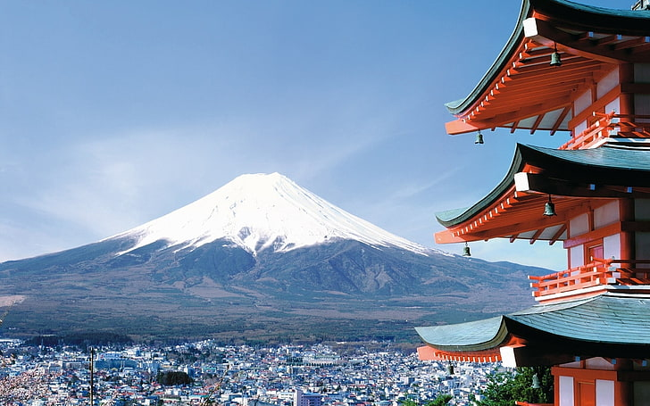
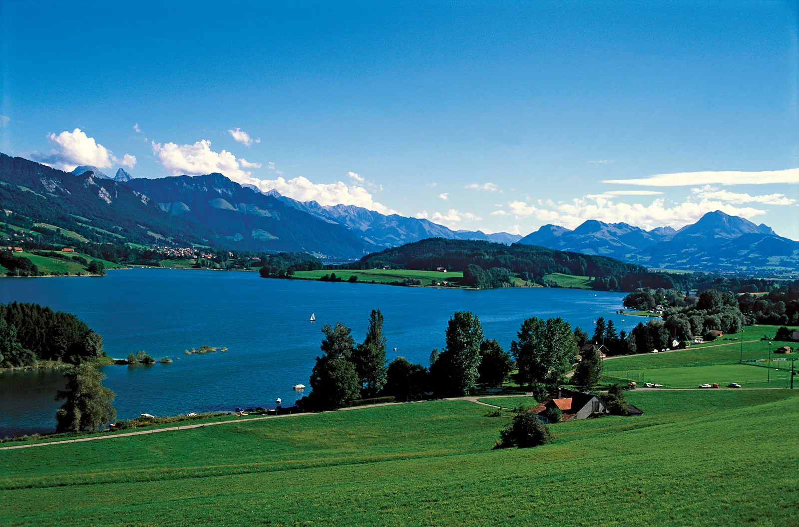

My travel list
Japan is an island country consisting of 7,000 small islands and four large ones, called Honshu, Hokkaido, Kyushu and Shikoku. These four islands constitute 97 per cent of the country’s total land area. The island country covers an area of 377,915 square kilometres. It lies in Asia, between the Pacific Ocean and Sea of Japan. Japan’s capital city is Tokyo, with a population of 13,370,198, while the entire country has a population of 126,958,000. 98.5 per cent of the population consists of ethnic Japanese.Click here to know about Japan.
French cooking is considered by many to be the most prestigious and respectable cuisine in the world. With its formal techniques, emphasis on fresh ingredients and simple flavors, pride in presentation, and rich and colorful history, French cuisine truly has come to rule the world, laying the foundations for many other styles and specialties.Click here to know about French Culinary.

Switzerland is famous for its mesmerizing alpine scenery, luxury branded watches, and delicious milky chocolate. A melting pot of many different cultures, Switzerland is also known for its alluring cities and scenic train rides that showcase the best of the country’s natural vistas.Click here to know about French Culinary. 